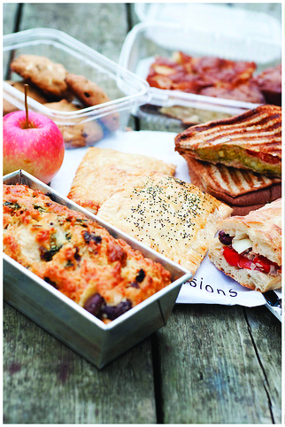

Nutrición
Viandas Nutritivas para el club

por Vanina F. Repun Lic. en Nutrición especializada en Alimentación Vegetariana
vanina.repun@gmail.com
www.inteligentenutricion.blogspot.com
La sola mención de la “vianda” genera una especie de urticaria. ¿Será que pone en evidencia que no hay mucho orden en la alimentación de la familia? Programar una vianda se nos representa como un trabajo EXTRA, que exige ese orden que no sabemos bien cómo lograr.
Primera premisa: No podemos controlar lo que nuestros hijos comen. NO SOMOS OMNIPRESENTES... A medida que los chicos crecen se pasan más horas fuera de casa (problema para algunas, alivio para otras) y esto necesariamente genera ámbitos de mayor autonomía en las comidas.
Y sí, ellos eligen, y en sus elecciones están influidos por las propagandas, las modas, sus gustos personales, los hábitos adquiridos y a cierta edad parece inevitable que la comida “chatarra” -o de escaso valor nutricional- sea lo que más les tienta.
Entonces debemos elegir para las viandas los alimentos de mejor calidad que podamos, así de la chatarra y sus secuaces (golosinas, gaseosas, comidas rápidas, snacks) se ocupan ellos solitos.
Segunda premisa: nuestra vianda NO incluye ni golosinas, ni juguitos de caja, ni gaseosa ni postrecitos. Con esto aclarado seguimos aprendiendo...
Entonces tenemos que asegurarnos de que lo que les mandamos sea rico, suficiente para que no se quede con hambre (y se la saque con golosinas), y con buen valor nutricional.
Nuestras viandas estarán compuestas por:
• alimentos energéticos: justamente, dan energía, tienen hidratos de carbono y/o grasas.
• alimentos reguladores: en los que predominan las vitaminas y los minerales.
• alimentos plásticos o formadores: en los que predominan las proteínas.
Tercera premisa: resolvemos las viandas de nuestros hijos con conocimiento y criterio.
ALIMENTOS ENERGÉTICOS
Cereales: arroz, trigo, avena, cebada, centeno, quinoa, amaranto, mijo, harinas y derivados, féculas, pastas…
Legumbres: porotos (todos), lentejas, garbanzos, arvejas secas y las harinas en derivado.
Aceites: Girasol, oliva, chia, canola, maíz…
Frutas secas: Almendras, nueces, castañas, maní, avellanas…
Semillas: Lino, chia, sésamos, zapallo, amaranto, quinoa…
Palta, Aceitunas y Coco…
ALIMENTOS PLÁSTICOS O FORMADORES
Lácteos: ricota, yogur queso, huevo, tofu…
Legumbres: porotos (todos), lentejas, garbanzos, arvejas secas y las harinas en derivado…
Combinar cereales con legumbres…
ALIMENTOS REGULADORES
Vegetales: todos verdes, de otros colores, con almidón…
Frutas: todas (secas y frescas)…
Semillas: Lino, chia, sésamos, zapallo, amaranto, quinoa…
Agua: “La bebida de los pueblos sanos”.
Armado de la vianda:
- Si la comida a consumir en el ámbito escolar o del club es una merienda o colación, sería bueno que incluya por lo menos dos -o ideal tres- alimentos: preferentemente uno energético, uno plástico y uno regulador.
- Si la comida a consumir es un almuerzo, sería bueno que incluya un alimento plástico, dos reguladores y dos o tres energéticos.
Ejemplo: Una bebida láctea (yogur o leche), una fruta (manzana ó banana que son bien aceptadas) y una barra de cereales o de semillas (les cuento que ahora hay amaranto y quinoa en copos, y hay almohadas de avena, riquísimas y buenas como opción).
Ejemplo: Un huevo, vegetales (ej. tortilla o croquetas de espinaca), cereales o pasta (una porción de arroz) y una fruta.
Cuarta y última premisa: confiamos en lo que les damos porque... Sin duda el mejor alimento del mundo para todos, y ninguna vianda podrá superar, es el AMOR.
Así que a desdramatizar las viandas y que sean otra oportunidad para darles ese amor que tan bien nutre a los niños.